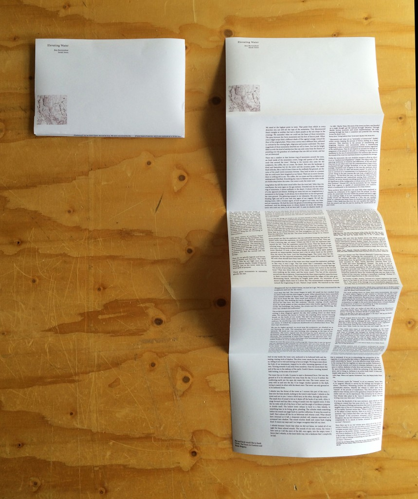

Elevating water Is a speculative fiction base around the town of Marfa, Texas. The text was produced in Colaboration with Sarah Jones whilst on residency in Marfa, as a part of TAAK\'s Summer School.
The full text can be found at amoving.net.

"Long before the fall the tower stood taller than the town hall. Taller than the courthouse, the neon signs on the gas stations. Dwarfed only by the distant ring of mountains, it shone endlessly in the desert. It shone with the silver of a star, ignored and distant. Holding our water but not our imaginations; a monument to the benign. It still shines, but it shines here on the new ground, the risen ground. The glittering sunspot is our obsession. We stare into its blinding light and tell it over and over again of our tragedy. We tell the shining tower, with a virulent regret, of how we gave it our train, our trees and our mountains. We feed the tower the ghosts of everything it has already swallowed. And the shining tower, in whose shadow we kneel, the shining tower who took our town, is all we have left. It casts its shadow inside of us and out, it is our only shade. We sit in its darkness now and the sounds we make are echoed and reuttered for us by our tower.2 We whistle into its darkness. It masters our voices as we retell its story. Everything is smaller now. One hundred miles between lilac and silver,3 reduced to a diameter of forty feet of steel.
Since we lost the things we loved to see, we have started to listen. Sound is something else without the amphitheatre of the lost mountains. It's something close to us that lives with hot breath in the empty silver belly of our tower. We empty ourselves into the tower, confessionally we flood its emptiness, as it flooded ours. We talk about events that preceded the flood but the time lines have fallen apart, our memories collide and collapse into one another. We can no longer date the sculptures or the storms. We remember the explosion and we remember the flood. Everything else is evaporating history and we know that as our stories dissolve, our past straightens out into a fine line. First the explosion, then the fall. The tower holds these things for us. Nature eats everything else.\"
Footnote 2 Monuments and ruins act as "sentinel[s] of historicism" (Sadek) within society, keeping the process of history making on a linear trajectory. They intervene in the process of remembering and forgetting. However, only monuments utilise a remembering forgetting in order to sustain a perpetual forward motion regardless of the ramifications. They do not implore an amnesia but instead, an assignment of the present to the past, or a putting on record. This is manifested in the use of commemoration over memory that removes the wound of the event but maintains honour or potential for revenge.
Unlike the monument, the ruin dutifully retreats to allow an object to act as "aestheticized dilapidation." (Sadek) This object holds "two opposing tendencies of ruination and edification, of life and death" from here we can either enter into the commemoration of past events, mechanised through nostalgic formalism, or we can "stand outside nostalgic formalism and recognize in the ruin the synthesis which overcomes the terms of a false and ancient enmity." In order for the ruin to convince us to commemorate, it is fundamental that it is not current. Being in the past removes the ruin from a heightened state of urgency. "In this form [the ruin], we thus feel the vitality of those opposing tendencies-and, instinctively sensing these antitheses in ourselves, we notice, beyond everything merely formal and aesthetic, the significance of the configuration in whose serene unity they have their synthesis." (Simmel 381) Like the monument, the ruin, stepped back from urgency, is capable of commemoration over memory, which is fundamental in the maintenance of a linear history.
Ruins perform their historicist role most fully when employed to expedite the withdrawal of the negative from the present. In other words, the catastrophe that may inhabit the present and bind it tight to the crushing weight of its own unyielding presentness must be swiftly evicted and efficiently framed as a ruin, lest our resident belief in a planned and better future be hindered and jeopardized." (Sadek 1) Here, Sadek describes how the ruin expedites the negative from the present and into the past by masking the ramifications of past events.
Reza Negerastani's analysis of a ramification in relation to a commitment to human can be used here to explain the nature of a ramification on the present from the past: "By eroding the anchoring link between present commitments and their past, and by seeing present commitments from the perspective of their ramifications, revision forces the updating of present commitments in a cascading fashion that spreads globally over the entire system. The rational structure of a commitment, or more specifically, of commitment to humanity, constructs the opportunities of the present by cultivating the positive trends of the past through the revisionary forces of the future." (Negarestani) If one compares this orientation of the ramification - here through reason, rather than through the disregard that takes place within Sadek's definition of a monument or ruin - the anti-revisionary potential that Sadek sets out above is exposed by Negerastani's commitment to human. The present is "cultivated" through its connection to the past, rather than through commemoration, which masks the past and in turn the ramifications of the present.\"
The full text can be found at amoving.net.
Sarah Jones (Perth, 1982) is a writer, artist and curator based in Berlin. She graduated from the Tasmanian School of Art (UTAS) in 2007 and is currently completing a Masters of Fine Arts at the Dutch Art Institute (DAI), Netherlands. Sarah recently participated in Felt & Fa(c)t at Ormston House, Limerick, 2014; the NOA Language School at SMBA, Amsterdam, 2013; The rise and fall of the continuous cycle, DeServiceGarage, Amsterdam, 2013; andcome to life at the Queen Victoria Museum and Art Gallery, Tasmania, 2012. Selected curatorial projects include: Both sides of everything about something at Sawtooth ARI, Launceston; The Hobart Urban Illumination Project as part of ITERATION:AGAIN, Tasmania; trophywife at Death Be Kind, Melbourne and Erotographomania at CAST Gallery, Hobart, all 2011.